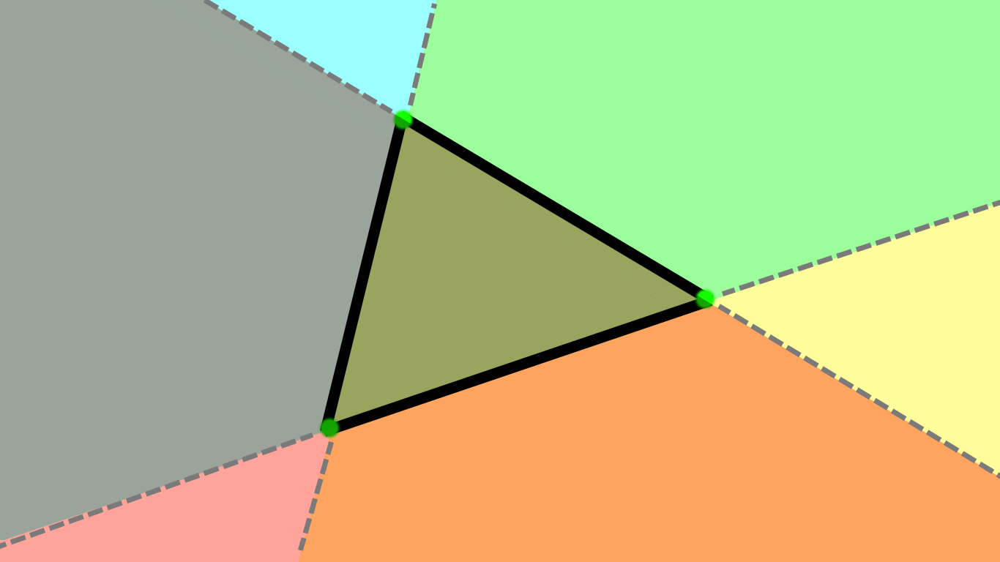
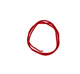

All possible hurtboxes atm: Rectangles, Triangles, and circles.
Rectangular hurtboxes simply call SDL_HasRectIntersection()
Triangles are very interesting! It's some of the oldest code in my game engine, I made it for my very first videogame back in Feb - May 2025...
...anyway. Triangles are defined as the intersection of 3 subsections of the plane.
Sounds complicated? I swear it's not! Here, have an illustration that will hopefully make it easier to understand:

Visualization of how triangular hurtboxes work!

[WIP] Circular hurtboxes simply use euclidean distance as defined in the